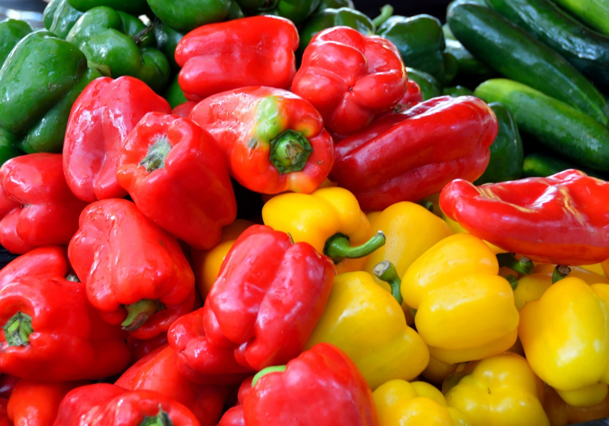

Спэлый пэрэц!!!
 Сочный пэрэц! Есть красный, есть зэленый, есть жолтей.
Можна в салат, можна есть так.
Можна патушить!
Если тушить, то грыбы дабавь и баран!
Балгарский пэрэц очень спэлый! Стоит не дорага! Скитка сделаем. Многа витамин.
Кило 70 рублей!